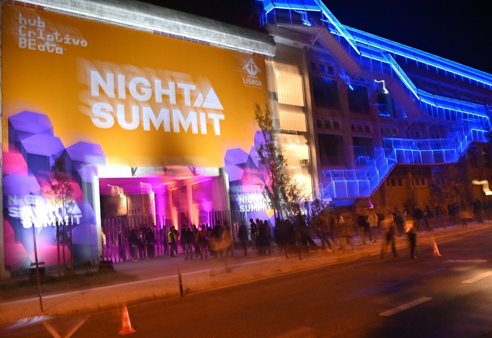
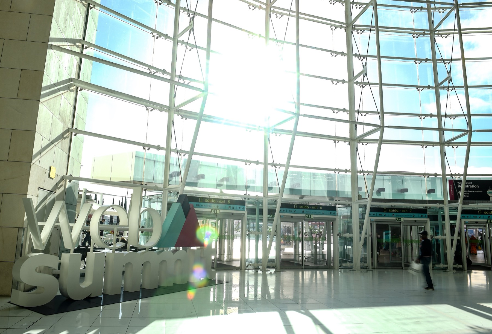

Which side events?
Most are free and need no Web Summit ticket, but hosts approve guests one by one. Register now.
Topics
Days
Past and closed
Confirm each event on its page before you go; hosts change times and venues.

What to do at the summit
Web Summit runs at MEO Arena and the FIL pavilions in Parque das Nações; Oriente metro is a 300 m walk.
What you can do at Web Summit
Tap what you are after, describe yourself in the box, and we pick the sessions.
Full programme on websummit.com/schedule and in the official Web Summit app.
Where to go inside Web Summit
Did we pick well?
Your checklist before you startBadge, transport, app profile, side events
Tick a task and it leaves the list. Saved on this device only.
All done. See you at the venue.
Done
How to spend a summit day
- Meetups over stages. Stages are for listening; the small meetups are where you actually talk. Pick two a day from the list below or from the app.
- Lunch. Tracks break at 13:00 and the food trucks queue at once. Eat at 12:15 or 14:30. You can bring your own food; vendors take cards only.
- 18:00. Night Summit in Pavilion 5 until 21:00, then into town for a side event or Night Summit Downtown. Register for the side event in advance.
Official meetups worth a seat
Inside the venue, badge needed. Times as listed in the Web Summit app.
Hacks for the week
What people who have done Web Summit before wish they had known, plus a few of mine from living here.
Getting around and staying alive
- Elena's tip
Take the metro, not Uber, at rush hour
Ubers and taxis around the venue get mobbed at the start and end of each day: surge prices and jammed roads. The red line to Oriente is faster and costs a few euros.
- Elena's tip
Wear shoes you can walk 15 km in
The pavilions are huge and Lisbon's stone pavements get slippery in the rain. Want heels to stand taller in the crowd? Great, just carry flats to change into.
Two pavilions a day, not six
Walking from Pavilion 1 to Pavilion 4 through the crowd takes 8 to 12 minutes, half a talk. Build each day around one or two halls.
Pastel de nata on the way in, lunch before noon
Grab a pastel de nata and a bica on your way in. Food lines peak at the 13:00 break; lunch around 11:00 saves you half an hour.
Power bank, not hotspot
The app, maps and Telegram drain your phone by evening. Bring a power bank; personal Wi-Fi hotspots are not allowed at the venue.
Via websummit.com
Forgot something? Go upstairs at Oriente
Centro Vasco da Gama above the metro has a supermarket open until midnight, a pharmacy, ATMs and SIM cards.
Stay one more day
The Web Summit transport pass covers the Cascais train. Spend a day at the sea before you fly home.
Networking
- Elena's tip
Selfie plus a note for every new contact
Connected on Telegram? Take a selfie together and write two lines right there: who they are and what you want to talk about next. No time to type? Record a voice message instead: faster, but harder to find later. By Thursday every face blurs.
- Elena's tip
Wear something bright, or red
In a hall full of grey and navy jackets, colour is how people find you again. “The one in the red jacket” is easy to remember.
Have one line ready
Most conversations last 5 to 10 minutes. Say what you work on and what you want this week in one breath, then ask about them.
Say it is your first Web Summit
People relax when they hear it: they do not expect a pitch, and they start giving you advice instead.
Via Dollphin, 2019
Be the connector
“You should meet someone I talked to yesterday.” Introduce people to each other and you become the person everyone remembers.
Two side events a night, small ones first
A 50 to 100 person event gives you real conversations; a mega party gives you a queue. Register for a backup each evening.
Keep your badge on in town
Conversations start in cafés and on the metro all week; the lanyard is your opener.
If you have a startup or a booth
- Elena's tip
Put a QR code on your back
Team T-shirts with a QR code and a 3 to 5 word line on the back that names your customer's pain. People read it in every queue and scan it.
- Elena's tip
Pay for the download with candy
Want app installs or sign-ups at the booth? Offer passers-by a small prize for doing it right there: stickers, candy, a tote. Laptop stickers beat flyers, which end up in the bin.
Also: Igor Baklytskyi, 2018
Getting there and around
From the airport
To the venue: metro red line to Oriente, three stops. Buses 705 and 744 also stop at Oriente. To the centre: red line to São Sebastião, then blue line to Baixa-Chiado, or bus 744 or 783.
From the centre to the venue
Metro from Baixa-Chiado: green line to Alameda, then red line to Oriente. Or blue line to São Sebastião, then red line. A Web Summit shuttle bus runs between Praça do Comércio and Oriente, 8:00 to 20:00. Uber and Bolt have drop-off points at the venue.
Transport pass
Web Summit pass: 3 days EUR 23 or 5 days EUR 31.50, unlimited metro, Carris buses and trams, and CP urban trains (Sintra and Cascais lines) for 72 or 120 hours from first use. Sold only at the airport next to badge pickup, 7 to 10 November. Tap the card on every ride.
Evenings
Coming back to the venue for Night Summit after 17:00? Use the North Entrance by Moscavide metro; the South Entrance closes to arrivals at 17:00. Most side events are in the centre: Cais do Sodré, Chiado, Príncipe Real, Arroios. Stay central if you plan to go out every night.
Sources: Web Summit: the city and the 2026 transport pass leaflet.
FAQTickets, bags, Wi-Fi, weather and safety
Do I need a Web Summit ticket for side events?
For almost all of them, no: you register with the host on Luma. The official meetups and Night Summit in Pavilion 5 need a badge. Night Summit Downtown is open to anyone.
What do I need to get in?
The ticket in the Web Summit app and photo ID to collect your lanyard and wristband. Wear both every day. Losing one costs EUR 100; losing both means a new ticket.
Can I bring a bag or a suitcase?
Only small bags: laptop bag, handbag or backpack size. Bag drops are at the South and North entrances. Non-retractable umbrellas are not allowed, and at Night Summit no umbrellas at all.
Can a friend without a badge come to Night Summit?
Not into Pavilion 5. Yes to Night Summit Downtown on Tuesday and Wednesday from 21:00, which runs in public bars.
Is there Wi-Fi and food?
Free event Wi-Fi in MEO Arena; personal hotspots are not allowed. Food trucks and vendors across the site with vegan, vegetarian and gluten-free options, cards only. You may bring your own food and a reusable cup.
What is the weather like?
Usually mild, but rain is possible and many spots are outdoors. Bring a waterproof jacket and flat shoes; expect to walk a lot.
Is Lisbon safe?
Yes, with the usual city sense. Pickpockets work the metro and trams, so keep your phone and wallet close. Emergency number: 112.
Sources: venue, registration and schedule essentials on websummit.com, checked 4 November.
My plan
Everything you saved, by day. Saved on this device only. For side events, register on each event page: hosts approve guests one by one.
Going to some of these? Want to compare notes there? Message me on Telegram.
Let's connect
Elena Shiltseva
Product leader in crypto, fintech and AI, based in Lisbon
I led product at CRYT, Rarible and Tinkoff, and I build AI tools every day; this guide is one of them. Took 2nd place solo at the Manus hackathon at Web Summit 2025. I made this guide on my own and am not part of the Web Summit team.
I am at Web Summit all week. Message me for:
- A product second opinion. Building in payments, crypto or AI? I have shipped products there; let's swap notes.
- Exchanging ideas and exploring a collaboration. What you saw on stage, what you are building next, partnerships and joint projects in crypto, fintech and AI.
Your business receives crypto or moves money across borders? My husband Ricardo runs a Lisbon crypto-to-EUR desk and is doing 30-minute research interviews this month, no pitch. Message me and I will connect you.